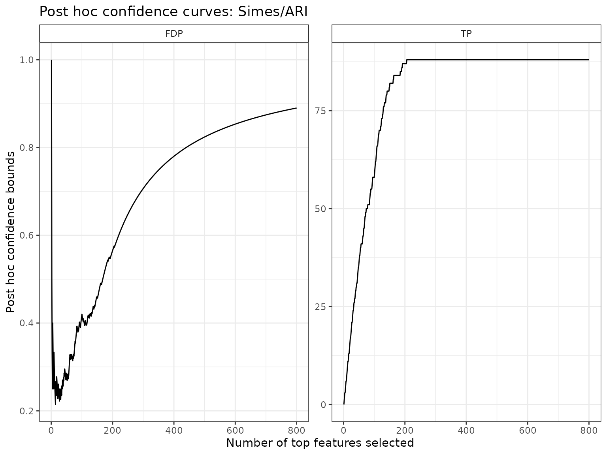
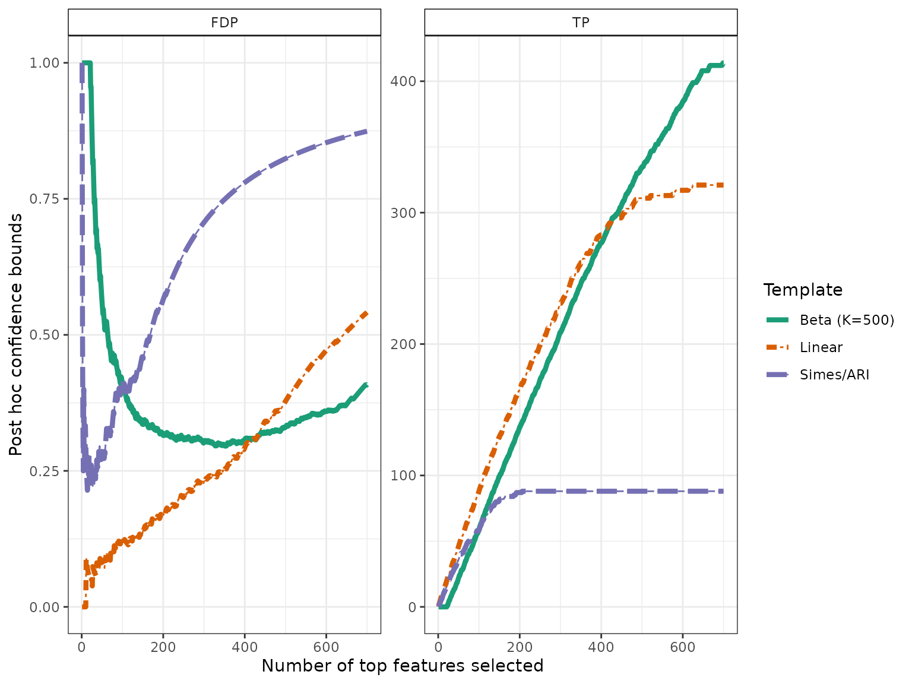

Permutation-based post hoc inference for fMRI studies
Alexandre Blain and Pierre Neuvial
2025-07-25
Source:vignettes/post-hoc_fMRI.Rmd
post-hoc_fMRI.RmdThis vignette shows how to use the sanssouci
package to perform permutation-based post hoc inference for fMRI data.
We focus on a motor task (left versus right click) from the Localizer
data set by Orfanos et al. (2017). The
data set is included in the sanssouci.data
package. It has been obtained using the Python module nilearn, see Abraham et al. (2014).
Setup
We first make sure that the required R packages are installed and loaded.
require("ggplot2") || install.packages("ggplot2")
require("sanssouci") || remotes::install_github("sanssouci-org/sanssouci@develop")
require("sanssouci.data") || remotes::install_github("sanssouci-org/sanssouci.data")We set the seed of the random number generator for numerical reproducibility of the results:
set.seed(20200924)Loading and preprocessing the data
The samples are classified into two subgoups, These subgroups correspond to two different motor tasks the subjects were asked to perform, “left click” vs “right click”:
| categ | Freq |
|---|---|
| left | 15 |
| right | 15 |
Post hoc inference by the Simes inequality
We start by calculating the Simes bound introduced by Goeman and Solari (2011). This bound has already been applied to fMRI data, see Rosenblatt et al. (2018). In that paper, post hoc inference (by the Simes inequality) is referred to as “All-resolutions inference” (ARI).
alpha <- 0.1We set the target confidence level to . The Simes bound is implemented in the package ‘cherry’. Here, we use the ‘sanssouci’ package, as follows:
groups <- ifelse(colnames(Y) == "left", 0, 1) # map to 0/1
obj <- SansSouci(Y = Y, groups = groups)
res_Simes <- fit(obj, B = 0, family = "Simes", alpha = alpha) ## B=0 => no calibration!Post hoc bounds are obtained from the bound
function:
TP_Simes <- predict(res_Simes, what = "TP")
TP_Simes
#> [1] 88The Simes bound implies that with probability larger than 0.9, the number of voxels associated to the task of interest (among all 4.89^{4} voxels) is at least 88.
Disregarding (for now) the voxel locations in the brain, we plot confidence bounds on -value level sets (corresponding to maps obtained by thresholding at a given test statistic):

Tighter confidence bounds by adaptation to unknown dependence
As discussed in Blanchard, Neuvial, and Roquain (2020), the above-described bound is known to be valid only under certain positive dependence assumptions (PRDS) on the joint -value distribution. Although the PRDS assumption is widely accepted for fMRI studies (see Genovese, Lazar, and Nichols (2002), Nichols and Hayasaka (2003)), we argue (and demonstrate below) that this assumption yields overly conservative post hoc bounds. Indeed, the Simes bound is by construction not adaptive to the specific type of dependence at hand for a particular data set.
To bypass these limitations, Blanchard,
Neuvial, and Roquain (2020) have proposed a randomization-based
procedure known as
-calibration,
which yields tighter bounds that are adapted to the dependency observed
in the data set at hand. We note that a related approach has been
proposed by Hemerik, Solari, and Goeman
(2019). In the case of two-sample tests, this calibration can be
achieved by permutation of class labels, which is readily available via
the fit function of the sanssouci package:
B <- 200
res <- fit(obj, alpha = alpha, B = B, family = "Simes")An alternative to the Simes/Linear reference family is the Beta reference family:
K <- 500
res_Beta <- fit(res, alpha = alpha, B = B, family = "Beta", K = K)As expected from the theory, the post hoc bounds obtained after calibration by these methods is much tighter than the Simes bound:
resList <- list("Simes/ARI" = res_Simes,
"Linear" = res,
"Beta" = res_Beta)
names(resList)[3] <- sprintf("Beta (K=%s)", K)
bounds <- sapply(resList, predict, what = "TP")
knitr::kable(bounds, digits = 2, col.names = c("Lower bound on True Positives"))| Lower bound on True Positives | |
|---|---|
| Simes/ARI | 88 |
| Linear | 321 |
| Beta (K=500) | 480 |
In the next two sections we illustrate the use of these improved bounds in order to build
- confidence curves for the true or false positives
- confidence statements for brain atlases
Confidence curves on “top-” lists
In the absence of prior information on voxels, a natural idea is to rank them by decreasing statistical significance, and a natural question to ask is:
Can we provide a lower confidence curve on the number (or proportion) of truly associated voxels among the most significant ones?
We illustrate the use of post-hoc methods to provide this type of information. More specifcally, we build confidence statements on the number of true/false positives within the top most significant voxels, where may be defined by the user after seing the data, and multiple choices of are allowed.
The confidence curves obtained by calibration of the Simes and Beta families can be compared graphically to the (parametric) Simes curve that can be obtained from Goeman and Solari (2011):
conf_bounds <- lapply(resList, predict, all = TRUE)
# cols <- c("lightgray", "black", "darkgray")
cols <- RColorBrewer::brewer.pal(length(conf_bounds), "Dark2")
p <- plotConfCurve(conf_bounds, xmax = 700, cols = cols, legend.title = "Template")
p + geom_line(size=1.5)
#> Warning: Using `size` aesthetic for lines was deprecated in ggplot2 3.4.0.
#> ℹ Please use `linewidth` instead.
#> This warning is displayed once every 8 hours.
#> Call `lifecycle::last_lifecycle_warnings()` to see where this warning was
#> generated.
In this example, ARI is outperformed by permutation-based approaches, which are able to adapt to unknown dependency: for the same target risk level (), both permutation-based bounds are much less conservative than the classical Simes/ARI bound.
Post hoc bounds on brain atlas areas
The goal in this section is to calculate post hoc bound on user-defined brain regions. One definition of such regions is given by the Harvard-Oxford brain atlas, which is available from the sanssouci.data package.
data(brainAtlas, package = "sanssouci.data")This atlas is made of 48 areas. For each of these areas, we calculate the three post hoc bounds obtained above. Note that by construction of post hoc bounds, these 48 bounds are valid simultaneously (in particular, no further multiple testing correction is required at this stage).
bounds <- apply(brainAtlas, 1, FUN = function(reg) {
S <- which(reg > 0)
c("Region size" = length(S), sapply(resList, predict, S, "TP"))
})In this particular case, some signal is revealed by the post hoc bound for 3 areas for permutation-based approaches:
ww <- which(colSums(bounds[3:4, ])>0)
cap <- sprintf("Lower bounds on the number of true positives in %s brain regions.",
length(ww))
knitr::kable(t(bounds[, ww]), caption = cap)| Region size | Simes/ARI | Linear | Beta (K=500) | |
|---|---|---|---|---|
| Precentral Gyrus | 6640 | 79 | 242 | 298 |
| Postcentral Gyrus | 5030 | 69 | 194 | 209 |
| Supramarginal Gyrus, anterior division | 2017 | 0 | 3 | 0 |
Here again, ARI is outperformed by permutation-based approaches which are able to adapt to unknown dependency: for the same target risk level () both permutation-based bounds are substantially less conservative than the classical Simes/ARI bound.
Session information
sessionInfo()
#> R version 4.5.1 (2025-06-13)
#> Platform: x86_64-pc-linux-gnu
#> Running under: Ubuntu 24.04.2 LTS
#>
#> Matrix products: default
#> BLAS: /usr/lib/x86_64-linux-gnu/openblas-pthread/libblas.so.3
#> LAPACK: /usr/lib/x86_64-linux-gnu/openblas-pthread/libopenblasp-r0.3.26.so; LAPACK version 3.12.0
#>
#> locale:
#> [1] LC_CTYPE=C.UTF-8 LC_NUMERIC=C LC_TIME=C.UTF-8
#> [4] LC_COLLATE=C.UTF-8 LC_MONETARY=C.UTF-8 LC_MESSAGES=C.UTF-8
#> [7] LC_PAPER=C.UTF-8 LC_NAME=C LC_ADDRESS=C
#> [10] LC_TELEPHONE=C LC_MEASUREMENT=C.UTF-8 LC_IDENTIFICATION=C
#>
#> time zone: UTC
#> tzcode source: system (glibc)
#>
#> attached base packages:
#> [1] stats graphics grDevices utils datasets methods base
#>
#> other attached packages:
#> [1] sanssouci_0.16.0 ggplot2_3.5.2
#>
#> loaded via a namespace (and not attached):
#> [1] Matrix_1.7-3 gtable_0.3.6 jsonlite_2.0.0 compiler_4.5.1
#> [5] crayon_1.5.3 jquerylib_0.1.4 systemfonts_1.2.3 scales_1.4.0
#> [9] textshaping_1.0.1 yaml_2.3.10 fastmap_1.2.0 lattice_0.22-7
#> [13] R6_2.6.1 labeling_0.4.3 generics_0.1.4 knitr_1.50
#> [17] tibble_3.3.0 desc_1.4.3 bslib_0.9.0 pillar_1.11.0
#> [21] RColorBrewer_1.1-3 rlang_1.1.6 cachem_1.1.0 xfun_0.52
#> [25] fs_1.6.6 sass_0.4.10 cli_3.6.5 pkgdown_2.1.3
#> [29] withr_3.0.2 magrittr_2.0.3 matrixTests_0.2.3 digest_0.6.37
#> [33] grid_4.5.1 lifecycle_1.0.4 vctrs_0.6.5 evaluate_1.0.4
#> [37] glue_1.8.0 farver_2.1.2 codetools_0.2-20 ragg_1.4.0
#> [41] rmarkdown_2.29 matrixStats_1.5.0 tools_4.5.1 pkgconfig_2.0.3
#> [45] htmltools_0.5.8.1